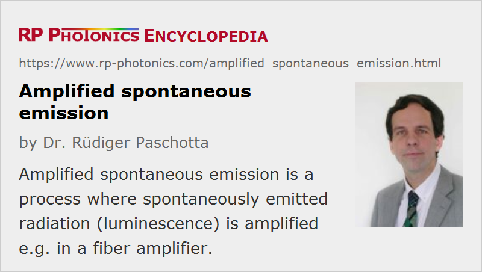

Amplified Spontaneous Emission
Acronym: ASE
Definition: a process where spontaneously emitted radiation (luminescence) is amplified
Alternative term: superluminescence
German: verstärkte Spontanemission
Categories: lasers, optical amplifiers, quantum optics, fluctuations and noise
How to cite the article; suggest additional literature
Author: Dr. Rüdiger Paschotta
In a laser medium with large gain, the luminescence (most often fluorescence) from spontaneous emission can be amplified to high power levels. This amplified luminescence may be used in applications where light with low temporal coherence but good spatial coherence (see below) is required. It also occurs in lasers, even when operated below the laser threshold.
Whereas luminescence originally goes in all spatial directions, ASE can be strongly directional for gain media with a large aspect ratio. As an extreme case, consider a fiber laser or fiber amplifier, where ASE propagating along the fiber can be much more powerful than the omnidirectional luminescent emission.
In lasers and particularly in high-gain amplifiers, amplified spontaneous emission is usually an unwanted effect. It tends to limit the gain achievable in a single stage of a fiber amplifier to the order of 40–50 dB. Higher gain values are possible e.g. for amplification of pulses, if several amplifier stages are used, which are separated by filters, Faraday isolators, and/or optical modulators (switches). Particularly in some fiber lasers, ASE can prevent lasing at extreme wavelengths, if the gain at other wavelengths is high enough for generating strong ASE. Such problems can often be overcome by optimizing the overall laser design, with special attention to fiber length, doping level and the like, and ASE at unwanted wavelengths may be suppressed with certain fiber designs (e.g. photonic crystal fibers) exhibiting high propagation losses outside the desired spectral region. Similar challenges arise in the context of some bulk lasers, e.g., Nd:YAG lasers operating at 946 nm, where strong ASE at 1064 nm can suppress 946-nm lasing.
Even if amplified spontaneous emission in an amplifier is not strong enough to extract significant power, it can contribute significantly to the noise of the amplified signal. The noise figure of a laser amplifier can be considered to be limited by ASE. Note that for quasi-three-level gain media this ASE effect is stronger than for four-level media.
As shown in Figure 1, the spectrum of ASE in the output of a rare-earth-doped fiber amplifier can differ strongly from that of the fluorescence leaving the fiber in a transverse direction. This is because of wavelength-dependent amplification and reabsorption. (The latter occurs only for quasi-three-level gain media.) Furthermore, ASE powers emitted in forward and backward direction in a fiber amplifier can differ. Usually, ASE is stronger in the direction opposite to that of pumping. Finally, the spectral shape of ASE can depend on the pump intensity level (see Figure 2).

Interesting aspects come into play when ASE occurs in waveguide structures such as fibers. For example, the amount of ASE into a single-mode core does not depend on the detailed waveguide parameters (e.g., on the core diameter and numerical aperture). Contrary to a common belief, the ASE power depends only on the number of modes, not on particular mode properties (except for propagation losses). Considerations involving some “capture fraction” for spontaneous emission, which is limited by the condition of total internal reflection, are appropriate only for strongly multimode waveguides, but not for few-mode or single-mode situations. (See the Photonics Spotlight of 2007-08-06 for details.) Some fiber amplifier models are wrong in this respect.
ASE is sometimes also called superluminescence, and correspondingly there is the term superluminescent sources (also ASE sources or white light sources) for light sources emitting superluminescent radiation. Such broadband (but usually spatially coherent) sources are useful for a number of applications.
In the context of free electron lasers, the term self-amplified spontaneous emission (SASE) is common. The addition of “self” only emphasizes that the amplification occurs in the same device which produced the spontaneous emission.
A phenomenon related to ASE, but with important physical differences, is superfluorescence.
Coherence Properties of Amplified Spontaneous Emission
The temporal coherence of ASE can be very low. In the time domain, the associated electric field exhibits fast random fluctuations, i.e., it has a rather short coherence time and coherence length. In the frequency domain, this corresponds to a large optical bandwidth. That bandwidth can be of the order of the gain bandwidth, but particularly in high-gain situations it is often substantially smaller than that.
The spatial coherence of ASE depends strongly on the circumstances. ASE from a short laser crystal, which is pumped with a large mode area, can have quite low spatial coherence, as the effective laser gain in substantially different propagation directions can be similar. On the other hand, ASE from a rare-earth-doped single-mode fiber can exhibit essentially perfect spatial coherence. This implies that such ASE can be well focused to a very small spot if suitable focusing optics (with low chromatic aberrations) are used.
Is Amplified Spontaneous Emission Unavoidable?
As ASE ultimately arises from a quantum effect (spontaneous emission), it is an unavoidable amplifier noise effect. Any phase-insensitive amplifier must at least add as much excess noise to a signal as corresponds to ASE in an ideal four-level laser amplifier. However, ASE may be above that quantum-mechanical limit, e.g. if one uses a (quasi)-three-level amplifier system and/or there are additional propagation losses (from absorption or scattering) within the amplifier. See the article on amplifier noise for more details.
Questions and Comments from Users
Here you can submit questions and comments. As far as they get accepted by the author, they will appear above this paragraph together with the author’s answer. The author will decide on acceptance based on certain criteria. Essentially, the issue must be of sufficiently broad interest.
Please do not enter personal data here; we would otherwise delete it soon. (See also our privacy declaration.) If you wish to receive personal feedback or consultancy from the author, please contact him e.g. via e-mail.
By submitting the information, you give your consent to the potential publication of your inputs on our website according to our rules. (If you later retract your consent, we will delete those inputs.) As your inputs are first reviewed by the author, they may be published with some delay.
Bibliography
| [1] | N. P. Barnes and B. M. Walsh, “Amplified spontaneous emission – application to Nd:YAG lasers”, IEEE J. Quantum Electron.35 (1), 101 (1999), doi:10.1109/3.737626 |
| [2] | M. Blazek et al., “Unifying intensity noise and second-order coherence properties of amplified spontaneous emission sources”, Opt. Lett. 36 (17), 3455 (2011), doi:10.1364/OL.36.003455 |
| [3] | S. Keppler et al., “The generation of amplified spontaneous emission in high-power CPA laser systems”, Laser & Photonics Reviews 10 (2), 264 (2016), doi:10.1002/lpor.201500186 |
| [4] | R. Paschotta, tutorial on "Fiber Amplifiers", part 4 on amplified spontaneous emission |
See also: spontaneous emission, optical amplifiers, laser noise, amplifier noise, superluminescent sources, superluminescent diodes, superluminescence, white light sources, The Photonics Spotlight 2007-07-30, The Photonics Spotlight 2007-08-06, The Photonics Spotlight 2013-07-08
and other articles in the categories lasers, optical amplifiers, quantum optics, fluctuations and noise
|  |
If you like this page, please share the link with your friends and colleagues, e.g. via social media:
These sharing buttons are implemented in a privacy-friendly way!